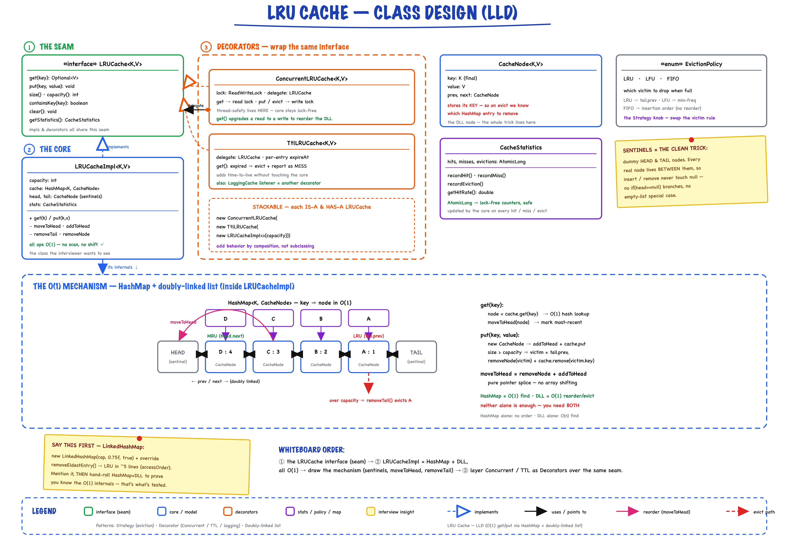

LRU Cache // O(1) Everything
HashMap + Doubly Linked List for O(1) get, put, and evict. Thread-safe Decorator with one ReentrantLock, TTL as a second Decorator. LRU and LFU behind one Cache interface.
01 — Requirements
Functional
- Get(key) — retrieve value in O(1), move to MRU position, return Optional<V>
- Put(key, value) — insert/update in O(1), move to MRU, evict LRU if at capacity
- Capacity management — fixed at construction, auto-evict when size exceeds capacity
- Statistics tracking — hits, misses, evictions, hit rate calculation
- containsKey(key) — check existence without updating access order
- clear() — remove all entries and reset statistics
- Reject null keys and null values with IllegalArgumentException
Non-Functional
- O(1) time for get, put, evict — no scanning, no sorting
- O(capacity) space — HashMap + DLL nodes
- Exact LRU — always evict true least-recently-used, not approximate
- Thread safety — base impl is single-threaded; ConcurrentCache wraps with a lock
- Extensible — pluggable eviction policies (LRUCache, LFUCache) behind the Cache interface
- Generic <K, V> — any hashable key, any value type
Out of Scope
- Distributed caching across multiple nodes
- Persistent storage (in-memory only)
- Background TTL sweeper — TtlCache expires lazily; call purgeExpired() from a scheduler if needed
- Cache warming strategies
Real-world: CPU caches, database query caches, web browser caches, CDN edge caching, Redis maxmemory-policy: allkeys-lru.
02 — Core Data Structure
Why HashMap + Doubly Linked List? HashMap gives O(1) lookup. DLL maintains access order and allows O(1) insertion/removal at any position. Together they make every cache operation O(1).
HashMap + Doubly Linked List
// The two data structures work together:
HashMap<K, Node> → O(1) key lookup, returns node reference
Node.prev/next → O(1) order tracking (MRU at head, LRU at tail)
// Visual layout (capacity=3, items A, B, C):
HashMap Doubly Linked List
┌───────┐
│ A → ●─┼──┐ Head ←→ [C] ←→ [B] ←→ [A] ←→ Tail
│ B → ●─┼──┤ MRU LRU
│ C → ●─┼──┘ (sentinel) (sentinel)
└───────┘
↑ most recent ↑ least recent
access evict this
HashMap values point directly to DLL nodes. No scanning needed — follow the pointer, unlink, relink.
Sentinel Nodes (Head/Tail)
Dummy nodes at both ends eliminate null checks and simplify edge cases.
Without Sentinels (complex)
if (head == null) { head = newNode; tail = newNode; } else { newNode.next = head; head.prev = newNode; head = newNode; }
With Sentinels (clean)
newNode.next = head.next; newNode.prev = head; head.next.prev = newNode; head.next = newNode;
03 — How It Works
Trace every operation step by step.
get(key) — Cache Hit
// Example: Initial: Head ←→ C ←→ B ←→ A ←→ Tail get(A): Find A in HashMap → unlink A → add A after Head Result: Head ←→ A ←→ C ←→ B ←→ Tail
put(key, value) — Eviction
// Example (capacity=3): Initial: {A:1, B:2, C:3} Head ←→ C ←→ B ←→ A ←→ Tail put(D, 4): 1. Cache full (size=3, capacity=3) 2. Evict LRU: A (tail.prev) 3. Remove A from HashMap and DLL 4. Add D to head Result: {D:4, C:3, B:2} Head ←→ D ←→ C ←→ B ←→ Tail
04 — Core Entities

The full picture: the Cache interface (seam) → LRUCache = HashMap + doubly-linked list giving O(1) get/put and tail-eviction (with sentinel head/tail nodes) → ConcurrentCache / TtlCache as Decorators over the same seam. CacheStats, CacheEventListener and LFUCache round out the model. This is the whiteboard diagram at minute ~10.
| Entity | Type | Key Fields |
|---|---|---|
| Cache<K,V> | Interface | get, put, remove, containsKey, clear, size, capacity, stats, addListener, removeListener |
| LRUCache<K,V> | Core Impl | capacity, HashMap<K, Node>, head/tail sentinels, long hits/misses/evictions, listeners |
| Node<K,V> | Nested class | key (final), value, prev, next — private static inside LRUCache; key kept for reverse-lookup on eviction |
| LFUCache<K,V> | Alt Impl | keyToNode, freqBuckets (freq → LinkedHashSet), minFreq — O(1) LFU, LRU tie-break |
| ConcurrentCache<K,V> | Decorator | ReentrantLock, delegates to any Cache |
| TtlCache<K,V> | Decorator | expiresAt map, ttlMillis, Clock — lazy expiry on get/containsKey, purgeExpired() |
| CacheStats | Value Object | immutable snapshot: hits(), misses(), evictions(), hitRate() = hits/(hits+misses) |
| CacheEventListener<K,V> | Observer | default onPut, onHit, onMiss, onEvict, onRemove, onClear |
Node — The DLL Node
// private static nested class inside LRUCache private static final class Node<K, V> { final K key; // immutable — needed for HashMap removal on eviction V value; // mutable — updated on put(existingKey, newValue) Node<K, V> prev, next; Node(K key, V value) { this.key = key; this.value = value; } } // sentinels are just new Node<>(null, null)
Why store key in node? When evicting tail.prev, we need the key to call map.remove(victim.key) on the HashMap.
05 — Design Patterns
Three patterns, each earning its place.
Strategy Pattern
Cache<K,V> is the seam: LRUCache and LFUCache are interchangeable eviction policies behind it. Chosen at construction; callers never know which one they hold.
Decorator Pattern
ConcurrentCache wraps any Cache to add thread-safety; TtlCache adds expiry. Composable: new ConcurrentCache<>(new TtlCache<>(new LRUCache<>(100), ttl)).
Observer
CacheEventListener receives onPut / onHit / onMiss / onEvict / onRemove / onClear. All methods are default, so a listener overrides only what it needs. LoggingCacheListener is the demo impl.
Sentinel Pattern
Head/Tail dummy nodes eliminate null checks at boundaries. No special cases for empty cache, single element, or full capacity.
06 — Key Operations (Java Code)
Pointer manipulation is the heart of LRU Cache. Every operation is O(1) because we never scan the list.
get(key) — Retrieve & Promote
public Optional<V> get(K key) {
requireNonNull(key, "key");
Node<K, V> node = map.get(key); // O(1) HashMap lookup
if (node == null) {
misses++;
fireEvent(l -> l.onMiss(key));
return Optional.empty();
}
moveToHead(node); // O(1) promote to MRU
hits++;
fireEvent(l -> l.onHit(key, node.value));
return Optional.of(node.value);
}
put(key, value) — Insert/Update & Evict
public void put(K key, V value) { requireNonNull(key, "key"); requireNonNull(value, "value"); Node<K, V> existing = map.get(key); if (existing != null) { // Update existing: change value, promote to MRU existing.value = value; moveToHead(existing); fireEvent(l -> l.onPut(key, value)); return; } // Full: evict LRU (tail.prev) BEFORE inserting if (map.size() >= capacity) { Node<K, V> victim = tail.prev; // O(1) unlink(victim); map.remove(victim.key); // O(1) evictions++; fireEvent(l -> l.onEvict(victim.key, victim.value)); } // New key: create node, add to map and DLL head Node<K, V> node = new Node<>(key, value); map.put(key, node); addAfterHead(node); fireEvent(l -> l.onPut(key, value)); }
Pointer Manipulation Helpers
// Remove node from its current position in DLL private void unlink(Node<K, V> node) { node.prev.next = node.next; // prev skips over node node.next.prev = node.prev; // next skips back over node } // Insert node right after head sentinel (MRU position) private void addAfterHead(Node<K, V> node) { node.next = head.next; // node points to old first node.prev = head; // node points back to sentinel head.next.prev = node; // old first points back to node head.next = node; // sentinel points to node } // Promote: unlink + relink at head private void moveToHead(Node<K, V> node) { unlink(node); addAfterHead(node); } // Evict: no helper — put() unlinks tail.prev inline (see above)
Constructor — Sentinel Initialization
public LRUCache(int capacity) { if (capacity <= 0) throw new IllegalArgumentException("capacity must be > 0"); this.capacity = capacity; this.map = new HashMap<>(); // Sentinel nodes: head ←→ tail (empty list) head = new Node<>(null, null); tail = new Node<>(null, null); head.next = tail; tail.prev = head; }
Alternative (hypothetical, not in src): Encapsulated DoublyLinkedList
private static class DoublyLinkedList<K, V> { private Node<K, V> head, tail; DoublyLinkedList() { head = new Node<>(null, null); tail = new Node<>(null, null); head.next = tail; tail.prev = head; } void addToHead(Node node) { /* same pointer ops */ } void remove(Node node) { /* same pointer ops */ } void moveToHead(Node node) { remove(node); addToHead(node); } Node removeTail() { /* remove tail.prev */ } void clear() { head.next = tail; tail.prev = head; } }
Both approaches are valid. LRUCache keeps the pointer ops inline (fewer types); an encapsulated DLL is cleaner if you reuse it.
07 — Thread Safety
ConcurrentCache (Decorator Pattern)
public final class ConcurrentCache<K, V> implements Cache<K, V> {
private final Cache<K, V> delegate;
private final ReentrantLock lock = new ReentrantLock();
public Optional<V> get(K key) {
lock.lock(); // exclusive: get() moves the node
try { return delegate.get(key); } finally { lock.unlock(); }
}
public void put(K key, V value) {
lock.lock();
try { delegate.put(key, value); } finally { lock.unlock(); }
}
// remove, containsKey, clear, size: same lock/try/finally shape
// stats() and listener registration take the same lock, so a listener
// list is never mutated while put() is iterating it to fire events
public CacheStats stats() {
lock.lock();
try { return delegate.stats(); } finally { lock.unlock(); }
}
public void addListener(CacheEventListener<K, V> l) {
lock.lock();
try { delegate.addListener(l); } finally { lock.unlock(); }
}
}
| Mechanism | Where | Why |
|---|---|---|
| ReentrantLock | ConcurrentCache | One exclusive lock around every delegate call — simple and correct |
| No ReadWriteLock | get() method | get() modifies access order (LRU moves node, LFU bumps freq) — not a pure read, so a read lock would buy nothing |
| plain long counters | LRUCache / LFUCache | hits/misses/evictions are guarded by the decorator’s lock; stats() returns an immutable CacheStats snapshot |
Gotcha: get() is a write — it modifies the DLL access order. With a ReadWriteLock, concurrent get() calls under the read lock would corrupt the linked list, so every op would need the write lock anyway. That is why ConcurrentCache uses a plain ReentrantLock.
Segmented Locking (Scale-up, hypothetical follow-up)
// Reduce contention by partitioning into N independent caches class SegmentedLRUCache<K, V> { private final int segments = 16; private final Cache<K, V>[] caches; // each a ConcurrentCache(new LRUCache(...)) private int getSegment(K key) { return Math.abs(key.hashCode() % segments); } public Optional<V> get(K key) { return caches[getSegment(key)].get(key); } }
Reduces lock contention by 16x. Each segment is an independent LRU cache with its own lock. Trade-off: not globally LRU, but per-segment LRU.
08 — Complexity Analysis
| Operation | Time | Space | Details |
|---|---|---|---|
| get(key) | O(1) | O(1) | map.get + unlink + addAfterHead |
| put(key, val) | O(1) | O(1) | optional evict + map.put + addAfterHead |
| evict (inside put) | O(1) | O(1) | tail.prev + unlink + map.remove |
| containsKey(key) | O(1) | O(1) | HashMap.containsKey (no DLL modification) |
| size() | O(1) | O(1) | HashMap.size() |
| clear() | O(1) | O(1) | HashMap.clear + reset sentinels |
Why not just HashMap + timestamps? Eviction would be O(n) — scanning all entries to find the minimum timestamp. The DLL maintains sorted access order automatically, so the LRU item is always tail.prev.
09 — Eviction Strategies
| Policy | Evicts | Data Structure | Hit Rate | Complexity |
|---|---|---|---|---|
| LRU | Least recently accessed | HashMap + Doubly Linked List | 40–60% | O(1) get/put/evict |
| LFU | Least frequently used (lowest count) | HashMap + Frequency Map + DLL per freq | 45–65% | O(1) amortized |
| FIFO | Oldest by insertion time | HashMap + Queue | 30–50% | O(1) get/put/evict |
| Random | Random entry | HashMap + Array | 25–40% | O(1) get/put/evict |
| TTL | Expired entries (by time) | HashMap + Priority Queue / Wheel | Varies | O(log n) evict |
| LRU-K | Least recent K-th access | HashMap + K timestamps per entry | 50–70% | O(log n) evict |
Workload Comparison
Workload: [A, B, C, D, A, B, E] Capacity: 3 LRU evicts: D (least recently used) LFU evicts: C or D (lowest frequency = 1) FIFO evicts: A (oldest insertion)
LRU is the best general-purpose policy. LFU is better for skewed access patterns. FIFO is simplest but worst hit rate.
10 — Interview Q&A
Why HashMap + DLL instead of just a HashMap with timestamps?
Why not just use Java's LinkedHashMap?
How would you add TTL (time-based expiration)?
Why does the concurrent version use ReentrantLock instead of ReadWriteLock?
How would you implement a distributed LRU cache?
How do you handle cache misses and cache stampede?
Write-Through vs Write-Back caching?
What are sentinel nodes and why use them?
How would you handle cache warming?
Why store the key inside Node?
LRU vs LFU — when to use which?
How would you test this implementation?
11 — Package Structure
lrucache/ ├── LRUCacheDemo.java -- demo: LRU, LFU, TTL, concurrency, composed decorators ├── api/ │ ├── Cache.java -- interface: get, put, remove, containsKey, clear, size, capacity, stats, listeners │ ├── CacheEventListener.java -- Observer: onPut/onHit/onMiss/onEvict/onRemove/onClear │ └── CacheStats.java -- immutable snapshot: hits, misses, evictions, hitRate() └── impl/ ├── LRUCache.java -- HashMap + DLL implementation (core), nested Node ├── LFUCache.java -- HashMap + freq buckets, O(1) LFU ├── ConcurrentCache.java -- Decorator: thread-safe with ReentrantLock ├── TtlCache.java -- Decorator: lazy per-entry TTL, purgeExpired() └── LoggingCacheListener.java -- demo listener: prints events
9 files · Two policies (LRUCache, LFUCache) + two Decorators (ConcurrentCache, TtlCache) over one Cache interface
12 — Patterns Summary
| Pattern | Where | Why |
|---|---|---|
| Strategy | Cache interface → LRUCache, LFUCache | Swap eviction algorithms without changing cache logic |
| Decorator | ConcurrentCache / TtlCache wrap any Cache | Add thread-safety without modifying base implementation |
| Sentinel | Head/Tail dummy nodes in DLL | Eliminate null checks and edge cases in pointer manipulation |
| Interface Segregation | Cache interface (api/) | Clean API contract, program to interface not implementation |
| Repository | HashMap as in-memory store | Abstracted storage, swappable for ConcurrentHashMap or DB |
| Value Object | Node (key is final), CacheStats (immutable) | Immutable key ensures HashMap consistency |
| Null Object | Optional<V> return type | Forces caller to handle cache miss, no NullPointerException |
Key Design Decisions (ADRs)
| Decision | Choice | Alternative | Rationale |
|---|---|---|---|
| Data structure | HashMap + DLL | LinkedHashMap | Full control, extensible, interview value |
| Thread safety | Separate Decorator | Always thread-safe | SRP, no overhead for single-threaded use |
| Null handling | Reject with exception | Allow nulls | Clarity, safety, consistent with Java 9+ Map.of() |
| Return type | Optional<V> | Nullable V | Type-safe, forces miss handling, modern Java |
| get() side effect | Updates access order | Pure read | True LRU semantics; use containsKey() for pure read |
9 files · O(1) everything · HashMap + DLL = interview gold